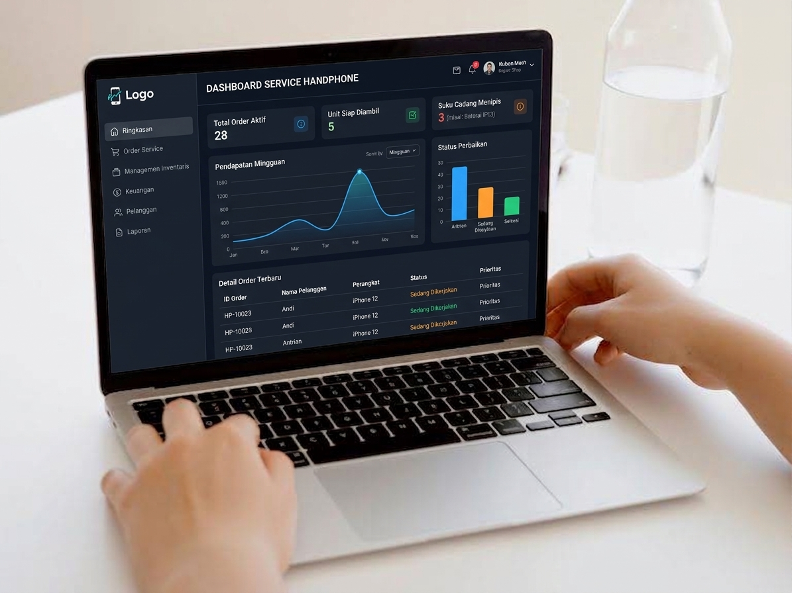

Penerimaan service, penugasan teknisi, pemantauan status, nota digital, hingga laporan pendapatan — dirancang untuk satu konter maupun banyak cabang.
Pendaftaran invite-only selama masa peluncuran. Pelanggan dapat melacak status tanpa akun.

Dari meja kasir sampai pengawasan pemilik usaha.
Penerimaan service dengan nota bernomor per cabang, estimasi dan deadline otomatis, alur status Antri hingga Selesai, serta pencatatan metode pembayaran Tunai, Transfer, dan QRIS.
Undang kasir dan teknisi per toko melalui kode invite. Satu akun dapat mengelola banyak cabang dengan data yang terisolasi — cabang A tidak dapat mengakses data cabang B.
Setiap nota memuat tautan pelacakan. Pelanggan memantau progres perangkatnya sendiri, termasuk masa garansi — tanpa perlu menghubungi toko.
Empat tahap, setiap perpindahan tercatat waktunya.
Data perangkat, keluhan, dan kondisi awal dicatat. Nota digital terkirim via WhatsApp lengkap dengan tautan pelacakan.
Service ditugaskan ke teknisi dengan estimasi dan deadline. Keterlambatan terdeteksi otomatis.
Hasil tercatat (jadi/tidak), pelanggan diberitahu, pembayaran dan metode bayar dibukukan.
Pelanggan memantau status dan garansi secara mandiri. Klaim garansi membuka service lanjutan yang terhubung.
Satu orang dapat memegang banyak toko dengan peran berbeda.
Mendaftar via invite, mengelola banyak toko, mengundang tim, dan memantau laporan tiap cabang.
Diundang owner ke toko tertentu. Mencatat service, mengelola pelanggan, dan menjalankan kasir harian.
Diundang owner ke toko tertentu. Mengerjakan antrean service serta memperbarui progres dan hasil.
Pendaftaran dibatasi undangan agar setiap toko terverifikasi.
Hubungi admin BOS Service atau pemilik toko mitra untuk mendapatkan kode invite owner.
Isi formulir pendaftaran, masukkan kode invite, dan daftarkan toko pertama Anda.
Bagikan kode invite toko ke kasir dan teknisi. Mereka mendaftar dan langsung terikat ke toko Anda.
Siapkan kode undangan — pendaftaran memakan waktu sekitar dua menit.
Mulai Daftar